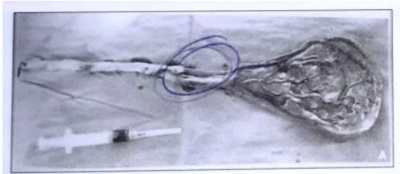
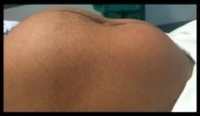
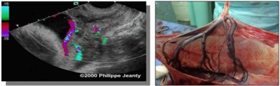

Questão 1 · Classif icação · 4000184794Um caso de descolamento prematuro de placenta é caracterizado por: sangramento vaginal; dor abdominal intensa; hipertonia uterina; feto em sofrimento, mas vivo. Pode-se afirmar que o mesmo classifica-se como grau:
A 1
B 2
C 3
D 0
Questão 2 · Rotura de vasa prévia · 4000184619Paciente 17 anos, primigesta, idade gestacional 32 semanas, com diagnóstico ultrassonográ co de vasa prévia ao ultrassom. Para esse caso, assinale a alternativa que apresenta a MELHOR conduta a ser realizada.
A Encaminhar para cesariana o mais rápido possível após corticoterapia hemotransfusão.
B Realizar o parto cesárea com gestação de 35 semanas devido ao risco de morte fetal por rotura dos vasos placentários.
C Conduzir o parto por via vaginal, uma vez que se trata de uma adolescente e não se pode comprometer seu futuro obstétrico.
D Encaminhar para indução do parto vaginal após corticoterapia e hemotransfusão.
Revisar: possível letra faltando em enunciado
Questão 4 · Obstetrícia · Placenta prévia PP · 4000183608São os principais fatores de risco para placenta prévia:
A Cesárea prévia, trabalho de parto prematuro, gemelaridade.
B Miomectomia, macrossomia, diabetes gestacional.
C Intervalo interpartal curto, amniorrexe prematura, tabagismo.
D Multiparidade, gemelaridade, oligoâmnio.
E Cesárea prévia, miomectomia, tabagismo.
Questão 5 · Obstetrícia · Placenta prévia PP · 4000183226A ocorrência de sangramento na segunda metade da gestação é responsável pelo aumento da morbidade gestacional. Entre as causas de hemorragia na gestação, está a placenta prévia. Quanto à placenta prévia, assinale a alternativa correta.
A A placenta prévia é definida como a presença de tecido placentário total ou parcialmente inserido no segmento inferior do útero após a 28ª semana de gestação.
B O diagnóstico clínico da placenta prévia inclui sangramento único, indolor, imotivado, com tônus uterino aumentado.
C O toque vaginal e a ultrassonografia transvaginal não são recomendados à paciente com placenta prévia, pelo risco de hemorragia.
D O parto cesáreo está sempre indicado nos casos de placenta de inserção baixa.
E A invasão da placenta no miométrio é denominada acretismo placentário, que pode ser total ou parcial.
Questão 6 · Obstetrícia · Acretismo placentário · 4000183151Paciente com 33 semanas de gestação, quartigesta com 3 cesáreas anteriores, previamente assintomática, procura o pronto socorro queixando-se de sangramento vaginal moderado. Sabidamente, possui placenta de inserção baixa centro- total com sinais de acretismo em região ístmica uterina. Não apresenta dinâmica uterina, feto ativo. Ao exame especular, conteúdo sanguinolento residual, sem sangramento ativo. Qual é a conduta mais adequada?
A Resolução imediata da gestação por via alta, abdicando-se da corticoterapia.
B Corticoterapia, internação para controle clínico, cesárea eletiva após 36ª semana.
C Resolução da gestação por via alta, aguardando 48h da corticoterapia.
D Controle clínico domiciliar, retornar se novo episódio de sangramento.
Questão 7 · Descolamento prematuro de placenta DPP · Obstetrícia · 4000182967Gestante de 33 anos com 36 semanas refere dor em baixo ventre há duas horas. AP: G3P1A1. Exame físico: P A 140x100mmHg, FC 96bpm, dinâmica uterina com 5 contrações de 40 segundos em 10 minutos, BCF 164 bpm. Toque vaginal: colo médio, medianizado, dilatado 3cm, bolsa íntegra. Durante a avaliação a paciente apresenta aumento súbito da dor, seguido de sangramento vaginal escuro, em moderada quantidade e di culdade para ausculta dos batimentos fetais. A hipótese diagnóstica e a conduta são:
A descolamento prematuro de placenta; rotura imediata da bolsa para reduzir a formação do coágulo retroplacentário e parto cesáreo de emergência.
B trabalho de parto taquitócico; analgesia de trabalho de parto para reduzir a dinâmica uterina.
C trabalho de parto taquitócico; rotura da bolsa para reduzir a dinâmica uterina e melhorar o fluxo útero-placentário.
D placenta prévia sem diagnóstico com sangramento decorrente do exame de toque vaginal; ultrassonografia de urgência para confirmação diagnóstica.
Questão 8 · Descolamento prematuro de placenta DPP · Obstetrícia · 4000182805Paciente com 37 semanas de gestação procurou a Emergência Obstétrica por sangramento vaginal. Informou realizar pré- natal (risco habitual), sem intercorrências. Ao exame, apresentava pressão arterial de 140/90 mmHg, frequência cardíaca de 110 bpm, altura uterina de 32 cm, 5 contrações dolorosas em 10 minutos, útero hipertônico e batimentos cardiofetais de 100 bpm. O exame especular revelou sangramento pelo orifício cervical externo, sem dilatação. Qual o diagnóstico mais provável e qual a conduta a ser seguida?
A Placenta prévia – ultrassonografia para confirmação do diagnóstico
B Descolamento prematuro de placenta – cesariana de urgência
C Ruptura uterina – cesariana de urgência
D Vasa prévia – ultrassonografia para definir a origem fetal do sangramento
Questão 9 · Sangramento segunda metade da gestação · Obstetrícia · 4000182735Para o diagnóstico diferencial de hemorragias de terceiro trimestre da gestação, numerar a 2ª coluna de acordo com a 1ª e, após, assinalar a alternativa que apresenta a sequência CORRETA: (1) Ruptura uterina. (2) Descolamento prematuro de placenta. (_) Sinal de Bandl. (_) Sinal de Frommel. (_) Sinal de Clarke. (_) Hipertensão arterial é um fator de risco.
A 1 - 2 - 1 - 2.
B 2 - 1 - 2 - 1.
C 1 - 1 - 1 - 2.
D 2 - 2 - 2 - 1.
Questão 10 · Obstetrícia · Acretismo placentário · 4000181730Gestante, 34 anos de idade, 37 semanas e 4 dias, 4G2Pc1A, chega no PS com polo cefálico coroando. O parto é ultimado, sem intercorrências. O recém-nascido nasce vigoroso e vai ao colo da mãe. Após 2 minutos do nascimento, a paciente apresenta sangramento vaginal abundante e queda do estado geral, com índice de choque de 0,9. Nota-se que houve dequitação parcial espontânea placentária. O útero está fortemente contraído na cicatriz umbilical e não existem lacerações de trajeto. Ao tentar terminar a dequitação da placenta, percebe-se que não há desprendimento placentário e solicita-se transferência à sala cirúrgica. Entre as opções abaixo, a conduta ideal para esta paciente deverá ser laparotomia exploradora de emergência e
A histerectomia puerperal.
B retirada da placenta com posterior histerorrafia.
C tentativa de reparo do local de lesão.
D histerectomia puerperal com placenta in loco.
Questão 11 · Tratamento · Quadro clínico · Descolamento prematuro de placenta DPP · 4000191032Mulher III gesta II para chega ao pronto-socorro com hemorragia vaginal, referindo gestação de 7 meses e quadro de dor forte há 6 horas, com sangramento escuro e intenso. Ao exame, PA 80 x 50 mmHg, pulso de 115 bpm. O útero apresentava-se hipertônico e DU de trabalho de parto ausente. A FCF não foi audível ao sonar. Colo grosso, pérvio para 1,5 cm, apresentação cefálica. Para esse caso, assinale a alternativa que apresenta a conduta correta.
A Administrar sulfato de magnésio.
B Levar imediatamente para cesárea.
C Romper membranas e indicar cesárea.
D Romper membranas e iniciar a indução.
E Iniciar a indução sem romper as membranas.
Questão 12 · Classif icação · Def inição · Placenta prévia PP · 4000191027A placenta prévia ou inserção baixa de placenta é uma das causas de hemorragia da segunda metade da gestação. Em relação a essa intercorrência, é correto afirmar:
A é frequente ocorrer em gestante com pré-eclâmpsia.
B 40% dos casos associa-se com descolamento prematuro da placenta (DPP).
C é hemorragia com quadro doloroso e sangramento vivo.
D quando a localização é marginal (inserção não recobre o orifício interno do colo), está indicada a rotura das membranas, pois assim pode permitir o parto vaginal com menor sangramento.
E o toque na admissão da gestante orienta quanto à possibilidade de parto vaginal ou à necessidade de se indicar via alta.
Questão 13 · Quadro clínico · Obstetrícia · 4000177445Primigesta de 30 anos, com 34 semanas de gestação, apresentou sangramento vaginal abundante, de cor vermelho viva, sem queixa de cólica. O colo uterino está fechado e normal, não havendo evidência de perda de líquido amniótico e de sangramento no momento. Os dados vitais encontram-se normais bem como os exames laboratoriais. O feto está reativo, com frequência cardíaca de 150 bpm, e seu peso estimado é de 2 kg. Nesse caso, o diagnóstico é
A vasa prévia.
B descolamento prematuro de placenta.
C placenta prévia.
D gravidez ectópica.
Questão 14 · Sangramento segunda metade da gestação · Obstetrícia · 4000170623O descolamento prematuro de placenta (DPP) con figura uma situação obstétrica de risco materno e fetal. Ocorre no terceiro trimestre e caracteriza-se pela separação da placenta, normalmente inserida antes da expulsão do feto, em gestação de vinte semanas ou mais completas. Quanto ao DPP, assinale a alternativa correta.
A Na presença de feto vivo e viável, deve-se evitar a amniotomia.
B Na presença de útero de Couvelaire, é indicada a histerectomia puerperal.
C O diagnóstico é realizado pelo ultrassom, que evidencia a presença de hematoma retroplacentário.
D O tabagismo está associado a risco 2,5 vezes maior de descolamento prematuro de placenta e óbito fetal.
E A maconha é a droga ilícita de uso recreativo que mais aumenta o risco de descolamento prematuro de placenta.
Questão 15 · Sangramento segunda metade da gestação · Obstetrícia · 4000170026Gestante de 27 semanas, com 3 cesáreas anteriores, apresenta sangramento vaginal discreto e indolor. Exame físico: BEG, eupneica, hidratada, PA: 115/75 mmHg, FC materna 80 bpm, AU no percentil 50, ausência de dinâmica uterina em 10 minutos, tônus uterino normal, BCF 146 bpm. Exame especular: discreta quantidade de sangue vermelho vivo coletado em fundo de saco, colo puntiforme, ausência de lesões vaginais e cervicais. A hipótese diagnóstica é:
A descolamento prematuro de placenta.
B trabalho de parto prematuro.
C insuficiência istmocervical.
D placenta prévia.
Questão 16 · Sangramento segunda metade da gestação · Obstetrícia · 4000169432Uma gestante de quarenta anos de idade, G5P3A1, estava em fase ativa de trabalho de parto induzido, caracterizado por cinco contrações de 40 segundos em 10 minutos, batimentos cardíacos fetais de 148 bpm e, ao toque, apresentação cefálica, no plano zero de De Lee, bolsa amniótica rota e colo com 8 cm de dilatação. Subitamente, referiu dor escapular intensa, acompanhada de interrupção da contratilidade uterina. Foi examinada novamente e, ao toque vaginal, observou-se apresentação cefálica alta e móvel e sangramento vaginal discreto. Ao exame físico: frequência cardíaca de 130 bpm; e pressão arterial de 80 x 40 mmHg. Trata-se de um caso de
A descolamento prematuro da placenta, com a presença do sinal de Bandl.
B rotura de vasa prévia, com a presença do sinal de Clark.
C rotura uterina, com a presença do sinal de Hastings.
D rotura uterina, com a presença do sinal de Laffont.
E rotura do seio marginal, com a presença do sinal de Frommel.
Questão 17 · Sangramento segunda metade da gestação · Obstetrícia · 4000168290Em casos de sangramento por descolamento prematuro de placenta, em uma gestação com feto com viabilidade e vitalidade, o nascimento deve se dar preferencialmente.
A pela via de parto através da qual o nascimento ocorra mais rapidamente.
B por parto vaginal com episiotomia.
C por parto vaginal com fórceps.
D por cesariana.
Questão 18 · Sangramento segunda metade da gestação · Obstetrícia · 4000167385Mulher, 36a, G3P0A2 com idade gestacional de 30 semanas, chega ao Pronto Atendimento de uma Maternidade referindo muita dor abdominal e parada da movimentação fetal há 1 dia. Exame físico: Regular estado geral, descorada 3+/4+, sudoreica, FC= 135bpm, PA= 81x52 mmHg; exame obstétrico: altura uterina 35 cm, útero hipertônico e doloroso à palpação, ausência de batimentos cardíacos fetais, toque vaginal: colo impérvio. A CONDUTA É:
A Realizar cesárea de urgência.
B Solicitar ultrassonografia de urgência.
C Induzir parto vaginal.
D Aguardar parto espontâneo.
Questão 19 · Diagnóstico · 4000167165Paciente, 31 anos, está na 29ª semana de sua terceira gestação, com duas cesáreas anteriores, e vem ao pronto- so co rro queixando-se de sangramento vermelho vivo, sem esforço desencadeante, em pequena quantidade, não associado à dor. Ao exame físico, apresenta útero com tônus preservado, altura uterina de 28 cm; Cardiotocografia Categoria II. Exame especular: visualizado o sangramento uterino ativo em pequena a moderada quantidade. Com base na história clínica da paciente, é sugerido um caso de
A descolamento prematuro de placenta.
B trabalho de parto prematuro.
C placenta prévia.
D abortamento.
E sangramento fisiológico.
Revisar: possível letra faltando em enunciado
Questão 20 · Sangramento segunda metade da gestação · Obstetrícia · 4000166175Uma secundigesta, com um parto normal anterior e idade gestacional de 36 semanas e dois dias, deu entrada no pronto- atendimento obstétrico com queixa de sangramento vaginal em grande quantidade há quarenta minutos. Refere que a hemorragia ocorreu “do nada”, tendo início após um “acesso de tosse”. Nega dor abdominal. Realizou seis consultas de pré-natal, com todos os exames dentro do limite da normalidade. Nega antecedentes pessoais de comorbidades. Ao exame de entrada, descorada +/4+, PA de 90 x 50 mmHg, FC de 101 bpm, altura uterina de 33 cm, ausência de dinâmica uterina, tônus uterino normal e BCF de 101 bpm. Especular mostrando grande quantidade de coágulos na vagina e sangramento ativo por orifício externo do colo. Foi encaminhada para cesariana de emergência. A foto abaixo corresponde à placenta, após dequitada. Com base nesse caso hipotético, assinale a alternativa que apresenta o diagnóstico do sangramento da segunda metade da gestação.

A placenta prévia
B descolamento prematuro de placenta
C rotura uterina
D rotura de vasa prévia
E avulsão do colo uterino
Questão 21 · Obstetrícia · Rotura uterina · 4000164973Primípara, IG = 39 semanas, está há 12 horas em trabalho de parto. Exame obstétrico: 5 metrossístoles em 10 minutos, com duração de 50 segundos; BCF = 130bpm; situação longitudinal, apresentação cefálica alta, plano - 2 de De Lee; colo 100% apagado e dilatado em10cm; bolsa rota, líquido tinto de mecônio. Refere estar com muita dor e à palpação abdominal observam-se os ligamentos redondos retesados, representando o sinal de:
A Frommel
B Bandl
C Clark
D Kluge
Questão 22 · Sangramento segunda metade da gestação · Obstetrícia · 4000164691Considerando os conceitos atuais e o protocolo FEBRASGO, assinale a alternativa correta sobre placenta prévia e acretismo placentário.
A A tomografia deve ser solicitada no terceiro trimestre, pois possui melhor acurácia para o diagnóstico de acretismo.
B Os três principais fatores de risco para o acretismo placentário são: gestação na adolescência, pré-eclâmpsia e o polidrâmnio.
C A placenta prévia é definida como a presença de tecido placentário total ou parcialmente inserido no segmento inferior do útero, após 28 semanas de gestação.
D Importante o diagnóstico precoce, pois cerca de 70% das placentas prévias, diagnosticadas no segundo trimestre, vão se manter até o termo.
E Sua clínica é de um sangramento vivo, geralmente de origem materna, acompanhado de aumento localizado e persistente do tônus uterino.
Questão 23 · Tratamento · Quadro clínico · 4000164689Primigesta, na 36a semana de gestação, com diagnóstico prévio de pré-eclâmpsia sem sinais de gravidade, apresenta dor de forte intensidade em hipogástrio. Ao exame físico pressão arterial de 170×110 mmHg, frequência cardíaca materna de 104 bpm. Altura uterina de 34 cm com aumento localizado de seu tônus, frequência cardíaca fetal de 180 bpm. No toque vaginal, o colo uterino está posterior, esvaecido 50% e dilatado em 4 cm. O diagnóstico e a conduta são:
A Trabalho de parto prematuro; inibir o trabalho de parto com nifedipina VO.
B Descolamento prematuro de placenta; romper bolsa e resolução da gravidez.
C Descolamento prematuro de placenta; prescrever hidralazina EV e solicitar u
D Trabalho de parto prematuro; prescrever sulfato de magnésio EV e inibir o trabalho de parto com nifedipina VO.
E Placenta prévia; realizar cesariana imediatamente.
Questão 24 · Rotura uterina · 4000164418Parturiente de 38 semanas, secundigesta com 1 cesária anterior, apresenta 2 contrações em 10 minutos, colo medianizado, bolsa rota há 2 horas e 5 cm de dilatação há 1 hora. A equipe decide introduzir ocitocina endovenosa em dose baixa. Após uma hora, a paciente refere dor intensa, 5 contrações longas em 10 minutos, batimentos cardíacos fetais de 160 por minuto, dilatação de 7 cm e distensão da região segmentar do útero, que apresenta forma de ampulheta. Neste momento, está indicado interromper imediatamente a ocitocina
A e realizar cesária por rotura uterina instalada.
B pelo risco iminente de rotura uterina.
C e indicar analgesia de parto para corrigir a distocia funcional.
D e realizar cesária por desproporção cefalopélvica.
Questão 25 · Sangramento segunda metade da gestação · Obstetrícia · 4000164086Mulher de 42 anos, G6P4A1, sendo quatro partos vaginais, é atendida na 30ª semana de gestação com queixa de sangramento vaginal, iniciado há uma hora, sem outras queixas. O exame físico revela metrossístoles ausentes, tônus uterino normal, BCF = 142bpm, feto em apresentação córmica. Exame especular evidencia colo sem lesões, orifício externo em fenda com sangramento moderado. De acordo com a principal hipótese diagnóstica do caso, o exame complementar a ser solicitado é:
A dopplerfluxometria de artérias umbilical e cerebral média
B ressonância nuclear magnética
C ultrassonografia transvaginal
D cardiotocografia
Questão 26 · Placenta prévia PP · 4000151635Quartigesta, 42 anos de idade, com 3 partos cesáreos anteriores, tabagista, hipertensa crônica, com história obstétrica de ocorrência de pré-eclâmpsia grave nas duas últimas gestações. Encontra-se na 28ª semana de gestação, sem intercorrências e faz suas consultas de rotina no pré-natal na Unidade Básica de Saúde. Retorna hoje para trazer o resultado dos exames solicitados há 15 dias. Está ansiosa devido resultado do exame ultrassonográ co, que mostrou placenta prévia centro-total. De acordo com esses dados, responda, respectivamente, qual é o principal fator de risco citado no caso para a ocorrência dessa patologia gravídica, qual complicação pode estar associada a esta patologia e qual exame complementar deverá ser solicitado para diagnóstico da possível complicação:
A Número de cesarianas prévias, acretismo placentário e ressonância magnética.
B Número de cesarianas prévias, descolamento placentário e dopplerfluxometria.
C Hipertensão arterial, atonia uterina e ultrassom pélvico nas primeiras 12 horas pós-parto.
D Toxemia gravídica, distúrbio de coagulação e dosagem laboratorial dos fatores de coagulação imediatamente após a dequitação.
Revisar: possível letra faltando em enunciado
Questão 27 · Sangramento segunda metade da gestação · Intercorrências obstétricas obstetrícia patológica · 4000146949Obstetrícia Gestante, G3P2(C2)A0, idade gestacional compatível com 36 semanas e 6 dias, peso materno 112,0 Kg, em uso de insulina NPH 90 unidades/dia, desde a 24ª semana. Realizou pré-natal em sua cidade de origem. Foi regulada para maternidade de referência devido a sangramento intenso há cerca de 2 horas. Ao exame admissional: sangramento abundante e de aspecto avermelhado, ausência de contratilidade uterina, tônus uterino normal; feto vivo, apresentação córmica, batimentos cardíacos fetais=140 bpm; PA:150/90 mmHg; toque vaginal não realizado. Decidiu-se internar para cesariana de emergência. Tendo em vista o caso, deve-se atentar para:
A A diabetes gestacional é o principal fator de risco isolado para hemorragias do terceiro trimestre.
B A ultrassonografia transvaginal é metodologia indispensável para conduta terapêutica.
C O Descolamento Prematuro de Placenta (DPP é a principal hipótese diagnóstica, pois a avaliação do tônus uterino não é relevante para o caso.
D Placenta prévia e acretismo placentário, obrigatoriamente devem ser hipóteses diagnósticas aventadas. O preparo da equipe cirúrgica e da estabilização hemodinâmica são essenciais.
E A melhor opção deveria ter sido o tratamento clínico, pois trata-se de placenta prévia e prematuridade.
Questão 28 · Sangramento segunda metade da gestação · Intercorrências obstétricas obstetrícia patológica · 4000146699Obstetrícia Paciente gestante, 24 anos, G2P1 com 39 semanas completas de gestação, apresentando contrações uterinas dolorosas e sangramento vaginal sem presença de muco. Nesse caso pode-se excluir como provável etiologia do sangramento:
A Placenta prévia.
B Descolamento da placenta.
C Tampão mucoso sanguinolento.
D Rotura de vasos prévios.
Questão 29 · Sangramento segunda metade da gestação · Intercorrências obstétricas obstetrícia patológica · 4000146355Obstetrícia T.G.F., 36 anos, GV PIV (4 cesáreas) A0, IG (USG precoce): 25 semanas, é encaminhada para hospital terciário com obstetrícia por achado ecográ co de percretismo placentário em placenta prévia centro total. Sem história de sangramento pregresso. Assinale a alternativa que apresenta a melhor orientação para o caso.
A Aguardar IG 37 semanas e programar a interrupção com embolização de artérias uterinas.
B Programação da resolução da gestação ao redor de 34 semanas, com radiologia intervencionista disponível e equipe multidisciplinar preparada.
C Realização de cesárea com a manutenção da placenta in situ e o uso de metotrexato, a fim de se tentar a reabsorção placentária.
D Interrupção imediata da gestação, pois se trata de feto inviável, e o risco de hemorragia materna e de morte é significativo.
E Histerectomia com útero cheio e sondagem vesical de demora por 15 dias pós-cirurgia.
Revisar: possível letra faltando em enunciado
Questão 30 · Sangramento segunda metade da gestação · Intercorrências obstétricas obstetrícia patológica · 4000146116Descolamento prematuro de placenta DPP O DPP (Descolamento Prematuro de Placenta) apresenta sangramento via vaginal em aproximadamente
A 80% dos casos.
B 50% dos casos.
C 100% dos casos.
D 30% dos casos.
Questão 31 · Obstetrícia · Acretismo placentário · 4000145929Uma gestante (G4 PC3 A1), com idade gestacional de 36 semanas e quatro dias, ao exame ultrassonográ co, apresenta feto único e vivo, em situação transversa. Biometria fetal de 34 semanas e seis dias e peso fetal estimado de 2.377 g no percentil entre 10 e 50 (curva de Hadlock). Líquido amniótico normal, com maior bolsão vertical de 38 mm. A placenta estende-se anterior e posteriormente, recobrindo o colo uterino, com sinais de invasão do miométrio. Colo uterino e Dopplervelocimetria mostram vascularização anômala, sugerindo invasão vesical na topogra a da cicatriz das cesarianas prévias. Nesse caso hipotético, o diagnóstico é o de placenta prévia
A centro-total, com sinais sugestivos de acretismo placentário.
B centro-total, com sinais sugestivos de percretismo placentário.
C centro-total, com sinais sugestivos de incretismo placentário.
D centro-parcial, com sinais sugestivos de acretismo placentário.
E marginal, com sinais sugestivos de acretismo placentário.
Revisar: possível letra faltando em enunciado
Questão 32 · Hemorragias pós parto HPP e rotura uterina · Sangramento segunda metade da gestação · 4000145925Intercorrências obstétricas obstetrícia patológica Uma parturiente (G3 PC1 A1), com idade gestacional de 39 semanas e três dias e gestação de risco habitual, na admissão, refere trabalho de parto de início espontâneo. Apresenta, ao exame físico, altura uterina de 41 cm, dinâmica uterina de quatro contrações de 35” em 10’ e batimentos cardíacos fetais de 148 bpm. O toque vaginal: colo posteriorizado; esvaecido 60%; dilatado 4 cm; bolsa íntegra; e apresentação cefálica. Durante a evolução do trabalho de parto, detectou-se taquissistolia (6 contrações de 50” em 10’), bradicardia fetal e intensa hemorragia vaginal. A paciente foi imediatamente encaminhada para a sala cirúrgica para cesariana de emergência. Após a anestesia geral e com a paciente em mesa cirúrgica aguardando a antissepsia abdominal, o que se viu foi a imagem mostrada a seguir. Com base nesse caso hipotético, é correto afirmar que o diagnóstico é o de

A rotura de vasa prévia.
B rotura de seio marginal.
C descolamento prematuro de placenta.
D rotura uterina.
E placenta prévia.
Questão 33 · Descolamento prematuro de placenta DPP · 4000145562Mulher, G1 P0, 36 semanas de gestação, usuária de cocaína, chega à maternidade com sangramento vaginal abundante, instável hemodinamicamente. Ao exame físico, observa-se hipertonia uterina, batimento cardíaco fetal de 90bpm e toque vaginal com 2cm de dilatação do colo. Sobre o caso clínico, assinale a alternativa ERRADA.
A Deve-se prescrever terbutalina e investigar vitalidade fetal com cardiotocografia
B Deve-se proceder a rotura de membrana amniótica imediatamente
C O diagnóstico mais provável é de descolamento prematuro de placenta normoinserida
D Útero de Couvelaire é uma das complicações desta condição
Questão 34 · Sangramento segunda metade da gestação · Intercorrências obstétricas obstetrícia patológica · 4000141627Descolamento prematuro de placenta DPP Secundigesta de 22 anos, com 36 semanas e 2 dias, procura a maternidade com desconforto abdominal e um pequeno sangramento vaginal há 1 hora. Exame físico: BEG, eupneica, hidratada, FC 110 bpm, PA 150 x 100 mmHg, tônus uterino aumentado, BCF 170 bpm. Presença de discreta quantidade de sangue coletado em fundo de saco vaginal, colo grosso e impérvio. O diagnóstico e a conduta são, respectivamente:
A rotura de seio marginal; ultrassom e observação de sangramento.
B trabalho de parto prematuro; inibição do trabalho de parto.
C placenta prévia; ultrassom e observação de sangramento.
D descolamento prematuro de placenta; cesárea de emergência.
Questão 35 · Sangramento segunda metade da gestação · Descolamento prematuro de placenta DPP · Obstetrícia · 4000141603Gestante com 35 semanas apresentou sangramento vaginal, sendo indicada cesárea de urgência. O líquido amniótico era sanguinolento, e o bebê chorou ao nascer. O tempo indicado para o clampeamento do cordão é
A de até 30 segundos.
B de 30 a 60 segundos.
C de 1 a 3 minutos.
D imediato.
Questão 36 · Classif icação · 4000141026Gestante, após 28 semanas de gestação, ao ultrassom via vaginal, apresenta tecido placentário parcialmente inserido no segmento inferior do útero e que não chega a atingir o orifício interno e localiza-se em um raio de 2 cm de distância desta estrutura anatômica. Considerando a atual definição e classificação da inserção da placenta, é correto a rmar que, nesse caso, trata-se de placenta
A de inserção baixa.
B prévia.
C prévia centro total.
D prévia marginal.
E prévia centroparcial.
Questão 37 · Fatores de risco · Sangramento segunda metade da gestação · 4000140570Intercorrências obstétricas obstetrícia patológica Apesar dos avanços da medicina, a hemorragia obstétrica ainda é considerada uma causa importante de morte materna. No terceiro trimestre, as causas mais importantes de hemorragia anteparto são a placenta prévia e o descolamento prematuro de placenta. Considere os fatores de risco elencados abaixo. I - Número de cesáreas prévias II - Gestações múltiplas III - Uso de cocaína IV - Doença hipertensiva específica da gravidez. São fatores de risco comprovadamente associados com a placenta prévia os que estão presentes nos itens
A II e III.
B I e IV.
C I e II.
D III e IV.
Questão 38 · Sangramento segunda metade da gestação · Intercorrências obstétricas obstetrícia patológica · 4000138359Obstetrícia Sobre placenta prévia, assinale a alternativa incorreta:
A Os fatores de risco mais comumente associados são cesarianas prévias, fumantes endometrites anteriores.
B O principal sintoma é a hemorragia no segundo ou terceiro trimestres, dolorosa de início súbito.
C É classificada como marginal quando a borda da placenta alcança a borda do orifício cervical interno.
D É um fator de risco para hemorragia pós-parto.
E A cesariana é a via de escolha na placenta prévia.
Questão 39 · Fatores de risco · Sangramento segunda metade da gestação · 4000137465Intercorrências obstétricas obstetrícia patológica Um dos principais diagnósticos diferenciais de placenta prévia (PP) é com o descolamento prematuro de placenta. Pode-se afirmar que o sinal clínico, melhor preditivo, de PP é relacionado com a hemorragia que:
A é inicialmente interna.
B é única, em geral.
C diminui com as metrossístoles.
D cessa após a amniotomia.
Questão 40 · Complicações · Obstetrícia · 4000129645A causa mais comum de necrose cortical aguda dos rins no ciclo gravídico puerperal é:
A o descolamento prematuro de placenta.
B a placenta prévia.
C a pré-eclâmpsia.
D a síndrome HELLP.
Questão 41 · Fatores de risco · 4000129394Quais os fatores de risco mais importantes para o descolamento prematuro de placenta (DPP)?
A Síndromes hipertensivas e trauma.
B Síndromes hipertensivas e DPP prévio.
C Uso de cocaína e tabagismo.
D Trauma e tabagismo.
Questão 42 · Descolamento prematuro de placenta DPP · 4000128428Multípara no curso da 36ª semana de gestação, usuária de drogas ilícitas, compareceu a apenas duas consultas de pré-natal. Chega no pronto-socorro relatando dor abdominal de forte intensidade, súbita, seguida de sangramento vaginal em pequena quantidade. Ao exame obstétrico: altura uterina = 34 cm, dor à palpação de abdômen, tônus uterino aumentado, batimentos cardíacos fetais = 176 bpm. Exame especular: sangramento escuro em pequena quantidade uindo pelo colo uterino. A hipótese diagnostica é:
A Vasa prévia.
B Placenta prévia.
C Trabalho de parto prematuro.
D Descolamento prematuro de placenta.
E Rotura de seio marginal.
Questão 43 · Fatores de risco · 4000125805Gestante, 35 anos, G4P2(CES=2) A1, em gestação de 32 semanas e altura uterina de 27 cm. Foi realizar ultrassonogra a de rotina que evidenciou acretismo placentário. São fatores de risco para acretismo placentário:
A Cesariana prévia, antecedente de miometrite, curetagem prévia e multiparidade.
B Cesariana prévia, restrição do crescimento fetal, gemelaridade e multiparidade.
C Restrição do crescimento fetal, gemelaridade, miometrite e multiparidade.
D Miometrite, miomectomia, restrição do crescimento fetal e inversão uterina prévia.
E Inversão uterina prévia, gemelaridade, restrição do crescimento fetal.
Questão 44 · Rotura uterina · 4000125773Mulher, 30 anos, G4P3C0A0, último parto há 3 anos. Procura o pronto-atendimento obstétrico com queixa de contrações. Exame físico: PA = 110x70mmHg; altura uterina = 39cm; batimentos cardio fetais = 150bpm; dinâmica uterina = 4 contrações de 45 segundos fortes em 10 minutos; toque vaginal: colo pérvio para 6cm, médio, cefálico alto e móvel com bolsa integra. Encaminhada ao pré-parto para acompanhamento do trabalho de parto. Após 2 horas e 30 minutos, é conduzida à sala de parto com dilatação total. Colocada em posição para parto e realizada rotura de membranas, com orientação de esforços para expulsivo e condução com ocitocina. Evolui com sangramento vaginal abundante, batimentos fetais inaudíveis e dinâmica uterina ausente, toque com dilatação total e apresentação inalcançável. O diagnóstico é
A placenta prévia.
B descolamento prematuro de placenta.
C rotura de vaza prévia.
D rotura uterina.
E rotura de seio marginal.
Questão 45 · Diagnóstico · 4000124755O diagnóstico do Descolamento Prematuro de Placenta deve ser feito a partir de:
A Anamnese e exame clínico obstétrico
B Ultrassonografia obstétrica e dosagem de fibrinogênio sérico
C Ressonância magnética da placenta e dosagem de fibrinogênio sérico
D Ultrassonografia obstétrica e exame histopatológico da placenta
E Anamnese, ultrassonografia e exame histopatológico da placenta
Questão 46 · Tratamento · Sangramento segunda metade da gestação · Descolamento prematuro de placenta DPP · 4000123414Primigesta com 32 semanas de gestação foi levada ao Centro Obstétrico, há 3 horas, por pequeno sangramento vaginal e útero muito contraído. O pré-natal transcorrera sem anormalidades. À admissão, a pressão arterial era de 160/80 mmHg. Os batimentos cardiofetais revelaram bradicardia persistente e, ao toque vaginal, o colo tinha 1 cm de dilatação. Antes da realização de cesariana, que exame, dentre os abaixo, será imprescindível?
A Cardiotocografia fetal
B Dosagem de plaquetas
C Teste do coágulo (teste de Weiner)
D Dosagem de tempo de protrombina
E Ultrassonografia obstétrica com Doppler
Questão 47 · Rotura de vasa prévia · 4000123401Assinale a alternativa que preenche, correta e respectivamente, as lacunas do parágrafo abaixo. A imagem reproduzida corresponde à alteração placentária conhecida como ________, sendo uma das causas de ________.

A placenta marginal - descolamento prematuro de placenta
B placenta acreta - ruptura uterina durante o trabalho de parto
C inserção velamentosa de cordão - sangramento de segundo e terceiro trimestres
D placenta circunvalada - ruptura prematura de membranas
E lobo acessório - hemorragia puerperal
Questão 48 · Fatores de risco · 4000119924Qual dos itens abaixo não é um fator de risco para placenta prévia?
A Idade materna avançada.
B Diabetes gestacional.
C Gestação gemelar.
D Tabagismo.
E Cesária anterior.
Questão 49 · Diagnóstico · 4000119861Gestante de 33 anos, G4P3A0C2, e idade gestacional de 27 semanas e 4 dias, apresenta sangramento vaginal há 1 hora. Nega outras queixas. Exame físico: PA 120x70 mmHg, FC 88 bpm, altura uterina 25 cm, tônus uterino normal, dinâmica uterina negativa, situação transversa, BCF 144 bpm. Exame especular: presença de pequena quantidade de sangue se exteriorizando pelo orifício cervical externo. A conduta é:
A solicitar ultrassonografia.
B realizar toque vaginal.
C solicitar ressonância magnética.
D realizar toque e solicitar ultrassonografia.
Questão 50 · Tratamento · Manejo do parto · Indicações de cesárea · 4000119184Gestante com deslocamento prematuro de placenta com óbito fetal, encontra-se estável hemodinamicamente. A altura uterina é de 28cm, o colo é pérvio para 4cm e o sangramento vaginal é discreto. Realizou-se amniotomia. Indica-se cesária se:
A a apresentação fetal for pélvica.
B dilatação do colo não progredir em até 6 horas.
C após uma hora não houver evolução do parto.
D não houver unidade de terapia intensiva no hospital.
Questão 51 · Diagnóstico · 4000115612Gestante, 34 anos, G4P3A0, 3 cesarianas prévias, pré-natal com evolução normal até 32 semanas, quando deu entrada à maternidade com quadro de sangramento vaginal intenso, vermelho vivo, indolor, intermitente, iniciado há 8 horas de forma discreta, progressivo, agravado na última hora. Exame obstétrico revela útero de consistência normal, algumas contrações de Braxton-Hicks, frequência cardíaca fetal de 120 bpm, padrão cardiotocográ co normal, nesse momento. Considerando o caso descrito, é CORRETO afirmar que se trata de um quadro compatível com:
A Placenta prévia.
B Acretismo placentário.
C Descolamento prematuro de placenta.
D Inserção velamentosa do cordão umbilical.
Revisar: possível letra faltando em enunciado
Questão 52 · Rotura de vasa prévia · Prolapso de cordão · 4000114867Assinale a alternativa incorreta em relação à inserção velamentosa de cordão:
A Favorece a ruptura precoce das membranas amnióticas.
B A ruptura dos vasos leva a sangramento de origem fetal.
C O diagnóstico pode ser feito pelo Doppler.
D Apresenta forte relação com Descolamento Prematuro de Placenta.
Questão 53 · Sangramento segunda metade da gestação · Obstetrícia · Rotura uterina · 4000114696O sinal de Bandl-Fromel significa:
A descolamento prematuro de placenta.
B iminência de rotura uterina.
C incontinência istmo-cervical.
D iminência de eclampsia.
Questão 54 · Diagnóstico · Classif icação · 4000114080A placenta de inserção baixa deve ser suspeitada nos casos de:
A sangramento indolor após coito em gestante com mais de 20 semanas.
B sangramento intenso acompanhado de forte dor abdominal súbita.
C primigesta com apresentação anômala e sangramento moderado no primeiro trimestre.
D multípara com cesárias anteriores e sangramento em pequena quantidade ao redor da 12ª semana.
Questão 55 · Tratamento · 4000113837Paciente de 29 anos, secundigesta (parto normal anterior há 3 anos), idade gestacional de 33 semanas, chega ao pronto atendimento da maternidade com história de contrações uterinas há três horas, dilatação cervical de 4 cm e polo cefálico em 1+ De Lee, evoluindo há 10 minutos com dor abdominal importante contínua e com aumento súbito de tônus uterino e alteração de vitalidade fetal durante a avaliação clínica. Ao exame físico: pressão arterial 80 x 50 mmHg, frequência cardíaca 115 bpm, frequência respiratória 24 irpm, Aparelhos respiratório e cardiovascular: dentro dos padrões de normalidade. Exame obstétrico: altura uterina = 35 cm, tônus uterino aumentado, ausculta fetal = 114 bpm com desacelerações até 97 bpm, movimentação fetal ausente. Toque vagina: colo uterino grosso, posterior, consistência rme, pérvio 2 cm, apresentação fetal cefálica. Em associação aos cuidados de estabilização clínica, qual a conduta imediata mais adequada?
A Parto cesárea.
B Amniotomia.
C Ácido tranexâmico.
D Corticosteroide.
Questão 56 · Descolamento prematuro de placenta DPP · 4000109036Gestante de 37 semanas chega ao pronto-socorro pouco contactuante, PA=60x40mmhg, pulso 120bpm, com sangramento vaginal discreto. Não se auscultam batimentos cardíacos fetais. A hipótese clínica imediata é:
A placenta prévia marginal.
B placenta prévia centro-total.
C síndrome hellp.
D descolamento prematuro de placenta.
Questão 57 · Tratamento · Quadro clínico · 4000108464Mulher, G3P2, com idade gestacional = 36 semanas, deu entrada no pronto-socorro com queixa de sangramento abundante e dor abdominal intensa. Ao exame: pressão arterial = 160 x 100 mmHg, frequência cardíaca = 100 batimentos/minuto, altura uterina = 35 cm, batimentos cardíacos fetais (BCF) = 140 batimentos/minuto. Dinâmica Uterina: útero de consistência lenhosa, difícil avaliação de contratilidade uterina. Exame especular: sangramento em grande quantidade, com coágulos. Toque Vaginal: dilatação do colo uterino = 4cm, 80% esvaecido, anterior, amnioscopia com líquido sanguinolento. Em avaliação ao chegar em centro obstétrico, toque vaginal: colo = 9cm, 100% esváecido, anterior. Apresentação em +1 de De Lee. BCF = 110 bpm. Qual é a conduta para o caso neste momento?
A Cardiotocografia e condução de trabalho de parto.
B Resolução da gestação por via alta.
C Amniotomia e assistência ao parto.
D Amniotomia e resolução da gestação por via alta.
Questão 58 · Tratamento · Quadro clínico · 4000108447Mulher, G3P2, com idade gestacional = 36 semanas, deu entrada no pronto-socorro com queixa de sangramento abundante e dor abdominal intensa. Ao exame: pressão arterial = 160 x 100 mmHg, frequência cardíaca = 100 batimentos/minuto, altura uterina = 35 cm, batimentos cardíacos fetais (BCF) = 140 batimentos/minuto. Dinâmica Uterina: útero de consistência lenhosa, difícil avaliação de contratilidade uterina. Exame especular: sangramento em grande quantidade, com coágulos. Toque Vaginal: dilatação do colo uterino = 4cm, 80% esvaecido, anterior, amnioscopia com líquido sanguinolento. Qual deve ser a conduta para o caso?
A Realização seriada de vitalidade fetal e observação clínica.
B Internação e resolução da gestação por via alta.
C Internação e condução de trabalho de parto.
D Controle de pressão arterial e alta hospitalar com orientações.
Questão 59 · Descolamento prematuro de placenta DPP · 4000108434Mulher, G3P2, com idade gestacional = 36 semanas, deu entrada no pronto-socorro com queixa de sangramento abundante e dor abdominal intensa. Ao exame: pressão arterial = 160 x 100 mmHg, frequência cardíaca = 100 batimentos/minuto, altura uterina = 35 cm, batimentos cardíacos fetais (BCF) = 140 batimentos/minuto. Dinâmica Uterina: útero de consistência lenhosa, difícil avaliação de contratilidade uterina. Exame especular: sangramento em grande quantidade, com coágulos. Toque Vaginal: dilatação do colo uterino = 4cm, 80% esvaecido, anterior, amnioscopia com líquido sanguinolento. Qual é o diagnóstico para o caso?
A Rotura prematura de membranas ovulares
B Ameaça de aborto
C Vasa prévia
D Descolamento prematuro de placenta
Questão 60 · Classif icação · 4000108069O descolamento prematuro de placenta tem prognóstico materno e fetal relacionados com a sua classificação clínica. Observando-se os parâmetros dessa classificação, dividida em 4 graus (0, 1, 2, 3 A ou B), assinale a alternativa CORRETA.
A A indicação de cesariana é a regra, independentemente da classificação observada clinicamente.
B O grau 0 tem diagnóstico retrospectivo pelo exame posterior da placenta, evidenciando presença de hematoma em sua face materna.
C A presença de hipertonia uterina é o sinal clínico constante no descolamento prematuro da placenta, independentemente dos graus dessa classificação.
D O prognóstico fetal é o mesmo no grau 2 e no 3 A, independentemente da via de parto escolhida.
E As condutas clínicas nos graus 3 A e 3 B são as mesmas, pois, nesses casos, a diferenciação se deve à presença de feto vivo ou morto, respectivamente.
Questão 61 · Tratamento · Quadro clínico · Diagnóstico · 4000107322Multípara de 36 semanas refere intensa dor abdominal há 30 minutos, com sangramento vaginal vivo que começou há cerca de 15 minutos. Ao exame, a pressão arterial é normal, a frequência cardíaca fetal é de 60bpm, o colo está pérvio para 5cm e a bolsa é íntegra. O útero encontra-se hipertônico. Há sangue na vagina em moderada quantidade, saindo do colo do útero. Um dos diagnósticos e a conduta são, respectivamente.
A deslocamento prematuro de placenta, cesária.
B descolamento prematuro de placenta, amniotomia para indução do parto.
C placenta de inserção abaixa, pegar acesso venoso calibroso e administrar inibina.
D placenta prévia centro-total, cesária.
Questão 62 · Fatores de risco · 4000107317O acretismo placentário está associado mais frequentemente:
A ao descolamento prematuro de placenta.
B à nuliparidade.
C à placenta prévia.
D ao útero bicorno.
Questão 63 · Rotura de vasa prévia · 4000106176Gestante tercípara, todos partos normais, idade gestacional de 32 semanas, pré-natal normal até o momento, comparece a atendimento com queixa de dor leve em hipogástrio. Ao toque: colo grosso, posterior, pérvio 1,5 cm, feto alto e móvel. Após o exame, passa a apresentar sangramento via vaginal abundante, indolor e bradicardia fetal importante. O mais provável diagnóstico nesse caso é:
A Descolamento prematuro de placenta.
B Rotura de vasa prévia.
C Placenta prévia.
D Rotura inadvertida de bolsa das águas.
Questão 64 · Fatores de risco · 4000106096O fator de risco mais importante na gênese da Placenta Prévia é:
A Tabagismo.
B Cesárea anterior.
C Diabete.
D Pré-eclampsia.
Questão 65 · Tratamento · Quadro clínico · 4000103825MRP, 37 anos, 4G3P0A, IG = 33s 5d, hipertensa crônica em uso de Metildopa 1g/dia e tabagista de 5 cigarros/dia. Ultrassom obstétrico sem alterações, realizado há 1 semana. Dá entrada no pronto-socorro com queixa de dor abdominal súbita acompanhada de sangramento vaginal em moderada quantidade, além de tontura. Ao exame físico de entrada: PA = 100 x 70 mmHg, FC = 110bpm, hipertonia uterina e BCF (batimentos cardíacos fetais) = 90bpm. Exame especular com sangramento ativo pelo colo do útero e toque vaginal mostrando dilatação cervical de 3cm. Qual o diagnóstico mais provável e a melhor conduta, respectivamente?
A Ruptura uterina. Estabilização hemodinâmica e cesárea de emergência.
B Placenta prévia. Internação para repouso, observação do sangramento e programação de parto com 37 semanas.
C Descolamento prematuro de placenta. Realização de ultrassonografia obstétrica, cardiotocografia e assistência ao trabalho de parto, aguardando parto por via vaginal.
D Descolamento prematuro de placenta. Amniotomia, estabilização hemodinâmica e cesárea de emergência.
Questão 66 · Placenta prévia PP · 4000102883Gestante com 30 semanas apresenta sangramento genital em pequena quantidade, vermelho-vivo, indolor. Ao exame: confirma-se o sangramento 1+/4+ exteriorizando-se pelo colo uterino, ausência de contrações uterinas e batimentos cardíacos fetais audíveis dentro da faixa de normalidade. A principal hipótese diagnóstica para o caso é:
A Descolamento prematuro de placenta
B Rotura uterina
C Placenta prévia
D Gestação ectópica
E Trabalho de parto prematuro
Questão 67 · Rotura uterina · 4000099615Mulher, 35a, G5P4C1A0, com último parto há 10 anos. É admitida em trabalho de parto, com dilatação de 8 cm, bolsa rota e polo cefálico apoiado. Antecedente pessoal: diabetes gestacional controlado com dieta. Após 3 horas, evoluiu com dilatação total, apresentação no plano -3 de De Lee e 5 contrações fortes em 10 minutos. O exame clínico evidencia a situação abaixo: Subitamente, apresenta quadro de sangramento vaginal em moderada quantidade e queda da pressão arterial acompanhada de taquicardia. O DIAGNÓSTICO É:

A Descolamento prematuro de placenta.
B Rotura uterina.
C Placenta prévia marginal.
D Laceração de trajeto.
Questão 68 · Fatores de risco · Diagnóstico dif erencial sangramento da segunda metade da gestação · 4000098043A situação obstétrica que representa MAIOR risco para sangramento pós-parto por acretismo placentário é:
A descolamento prematuro de placenta.
B gestação gemelar monocoriônica.
C placenta prévia centro-total.
D inserção velamentosa de cordão.
Questão 69 · Diagnóstico dif erencial sangramento da segunda metade da gestação · 4000089366Durante o acompanhamento pré-natal, é recomendado realizar a avaliação ultrassonográ ca da inserção do cordão umbilical na placenta, visando diagnosticar condições que possam contribuir com piores desfechos obstétricos. A condição mostrada nas imagens de ultrassonografia e macroscopia acima está associada à:

A retenção placentária
B sofrimento fetal agudo
C abortamento espontâneo
D descolamento prematuro de placenta
Revisar: possível letra faltando em enunciado
Questão 70 · Diagnóstico dif erencial sangramento da segunda metade da gestação · 4000083996Em relação aos sangramentos do segundo e terceiro trimestres da gestação, analise as assertivas abaixo: I - Na vasa prévia, os vasos umbilicais cursam através das membranas sobre o orifício interno do colo e à frente da apresentação fetal. II - Cesariana prévia é o principal fator de risco para acretismo placentário na presença de placenta prévia, entretanto, esse risco não aumenta proporcionalmente com o número de cesarianas anteriores. III - A ocorrência de placenta prévia aumenta a incidência de ruptura prematura de membranas. IV - Mulheres com deslocamento prematuro de placenta apresentam um grande risco de repetir o acidente na gestação seguinte. Quais estão corretas?
A Apenas I e III.
B Apenas II e IV.
C Apenas I, III e IV.
D I, II, III e IV.
Questão 71 · Placenta prévia PP · 4000083684Paciente feminina, 35 anos, G4PC3A0, IG:34 semanas, deu entrada na maternidade com quadro de sangramento vaginal moderado, indolor, BCF = 136bpm (regular), tônus uterino normal. Diante do quadro clínico descrito, qual a principal hipótese diagnóstica?
A Rotura de vasa prévia
B Descolamento prematuro de placenta
C Placenta prévia
D Rotura uterina
Questão 72 · Rotura uterina · 4000076619G5 P4 (3PN 1C), apresenta hipertonia uterina no nal da fase de dilatação. Após a retirada da ocitocina e com início do expulsivo, cessa a hipertonia, mas ocorre sangramento volumoso. A paciente queixa de dor na escápula direita e evolui com hipotensão, hematúria na sonda, desaceleração dos batimentos cardíacos fetais e subida da apresentação. A hipótese diagnóstica é:
A Descolamento de placenta.
B Toco traumatismo materno.
C Rutura uterina.
D Distócia cervical dinâmica.
E Inversão do tríplice gradiente descendente.
Questão 73 · Tratamento · 4000075177Gestante com 16 semanas, assintomática, traz ultrassonografia que mostra placenta prévia. Assinale a alternativa CORRETA:
A Deve-se tomar conduta expectante visto que há grande chance de se resolver espontaneamente (“migração placentária”).
B Se no seguimento apresentar vasa previa a melhor via de parto é a vaginal.
C Se houver sangramento devido à placenta prévia este deverá ser escuro e acompanhado de dor e contrações.
D O ultrassom transvaginal está contraindicado devido à maior chance de hemorragia grave.
Questão 74 · Placenta prévia PP · 4000074128Gestante lúcida e orientada deu entrada na maternidade com quadro de gestação de 36 semanas e sangramento vaginal vermelho vivo moderado com início há 1 hora, sem outras queixas. Ao exame, mucosas levemente hipocoradas, PA = 110 x 60 mmHg, BCF = 130 bpm, útero gravídico com fundo uterino de 32 cm do púbis. No exame especular observou-se colo com canal, orifício externo fechado com sangue. O diagnóstico mais provável é
A Descolamento prematuro da placenta.
B Placenta prévia.
C Rotura uterina.
D Gestação molar.
Questão 75 · Rotura uterina · 4000073239Paciente de 45 anos, 38 semanas, em período expulsivo após rápida evolução do trabalho de parto. Ao exame foi detectada hipertonia uterina que se seguiu de sangramento volumoso, hipotensão arterial, desaceleração dos batimentos cardíacos fetais e subida da apresentação. Qual sua hipótese diagnóstica?
A Descolamento prematuro de placenta.
B Rotura de vasa prévia.
C Rotura uterina.
D Distocia de colo.
E Anel de Bundle.
Questão 76 · Placenta prévia PP · 4000073209Gestante com antecedente de 5 cesarianas, encontra-se com 33 semanas e apresenta sangramento vultoso, rutilante e indolor. Ao exame: PA=100X60mmHg, BCF=155bpm, atividade uterina irregular. Qual o diagnóstico mais provável?
A Trabalho de parto.
B Placenta prévia.
C Vasa prévia.
D Rotura uterina.
E Descolamento prematuro da placenta.
Questão 80 · Quadro clínico · 4000065848Gestante, 34 anos, G5P3A1, é internada com sangramento vaginal rutilante, discreta dor abdominal há aproximadamente 3 horas. Não sabe informar a DUM e a USG Obstétrica de primeiro trimestre revela idade gestacional de 32 semanas e 5 dias. Ao exame físico palidez cutânea muscoa, sudorese, PA 100 x 60 mmHg, Pulso 95 pbm. Ao exame obstétrico AU 32 cm, situação longitudinal, apresentação cefálica, colo pérvio com polpa digital e sangue em canal vaginal. O DIAGNÓSTICO MAIS PROVÁVEL é:
A Placenta prévia.
B Deslocamento prematuro de placenta.
C Sofrimento fetal agudo.
D Rotura uterina.
E Rotura prematura de membranas.
Questão 81 · Quadro clínico · 4000062493Paciente 35 anos, 34 semanas de gestação da entrada na emergência referindo dor abdominal intensa, súbita e sangramento vaginal escuro. Ao exame apresenta-se taquicardia, hipotensa, hipocorada, hipertonia uterina, bcf: 110bpm. A principal hipótese diagnóstica para esse quadro é:
A Placenta prévia
B Descolamento prematuro de placenta
C Rotura uterina
D Rotura de vaso prévia
Questão 82 · Quadro clínico · 4000062239Gestante de 32 anos, G4P3A0, com 34 semanas de amenorreia, usuária de drogas, sem pré-natal. Queixa-se de dor abdominal de forte intensidade, de início súbito, seguida de sangramento vaginal em pequena quantidade. Exame obstétrico: altura uterina = 32 cm, dor a palpação de abdome, tônus uterino aumentado, batimentos cardíacos fetais= 180 bpm. Exame especular: sangramento escuro em pequena quantidade fluindo pelo colo uterino. A HIPÓTESE DIAGNÓSTICA É:
A Trabalho de parto prematuro.
B Placenta prévia.
C Vasa prévia.
D Descolamento prematuro de placenta.
Questão 83 · Tratamento · Diagnóstico · 4000062002Gestante 38 anos, G3P2A0, 2 partos vaginais prévios, pré-natal realizado na atenção secundária por apresentar hipertensão arterial crônica, em uso de metildopa 500mg de 8/8horas e com 35 semanas de gestação. Deu entrada à maternidade de um serviço público com quadro de sangramento vaginal moderado e escuro, associado a dor abdominal intensa, iniciado há 30 minutos de forma progressiva. Exame obstétrico revela útero hipertônico, frequência cardíaca fetal de 90bpm, PA: 140X90mmHg, FC:104bpm, UF:32cm, dinâmica uterina de difícil avaliação, colo 50% apagado, 3cm dilatado e bolsa protusa. Considerando o caso descrito, assinale a alternativa que apresenta as MELHORES condutas imediatas para essa paciente.
A Aminiotomia, acesso venoso, reserva de sangue e cesariana de urgência.
B Ultrassonografia, hemograma e coagulograma para definir o caso.
C Corticoide e aguardar 24 horas da última dose para realizar o parto.
D Indução do parto e administração de sulfato de magnésio para evitar eclâmpsia.
Questão 84 · Quadro clínico · 4000056718Mulher, 32 anos de idade, G3P2C1, idade gestacional 34 semanas e 3 dias, com pré-natal adequadamente realizado, sem antecedente de hipertensão arterial, deu entrada no pronto-socorro com queixa de turvação visual e vômitos há 6 horas. Ao exame: pressão arterial = 160 x 110 mmHg, reflexos vivos, sem aumento de área reflexógena, altura uterina = 32cm, dinâmica uterina ausente, batimentos cardíacos fetais (BCF) = 160 batimentos/minuto, toque vaginal: dilatação = 2cm, colo grosso e posterior. Durante a avaliação, após condutas iniciais, a paciente queixou-se de fortes dores abdominais e sangramento vaginal, em grande quantidade. Ao exame clínico, apresentava tônus uterino aumentado, BCF = 90 batimentos/minuto, toque vaginal: 5cm de dilatação, colo esvaecido, anteriorizado. Qual é o diagnóstico?
A Ruptura uterina
B Trabalho de parto prematuro
C Descolamento prematuro de placenta
D Vasa prévia
Questão 85 · Classif icação · 4000053090A placenta prévia e o acretismo placentário são causas clinicamente importantes de hemorragia. Essas condições estão associadas à mortalidade e à morbidade perinatais significativas, por aumento da incidência de prematuridade, baixo peso ao nascer, distúrbios respiratórios e óbitos perinatais. Analise os conceitos a seguir elencados. I. Classicamente, a placenta prévia é definida como a presença de tecido placentário que recobre ou está muito próximo ao orifício interno do colo uterino após 24 semanas de gestação. II. Na placenta prévia centro total a placenta recobre totalmente o orifício externo do colo uterino. III. Na placenta prévia centro parcial a placenta recobre parcialmente o orifício externo do colo do útero. IV. Na placenta prévia marginal a borda placentária margeia o orifício interno do colo do útero, sem recobri-lo. V. Na placenta prévia lateral ou implantação baixa da placenta, embora implantada no segmento inferior do útero, a placenta não alcança o colo uterino (borda placentária distante até 7cm do orifício interno do colo). Pode-se também incluir os casos em que a relação exata da placenta com o orifício interno não pode ser determinada, ou de aparente placenta prévia no segundo trimestre. Estão corretas apenas as alternativas
A I e II.
B I e V.
C II e IV.
D III e V.
E IV e V.
Questão 86 · Tecido retenção de tecido placentário · Acretismo placentário · 4000047435Atualmente a principal indicação para histerectomia-cesárea é:
A descolamento prematuro de placenta
B sangramento uterino não identificado
C placenta acreta
D ruptura uterina
Questão 87 · Diagnóstico de HPP · Rotura uterina · 4000046511Quais sintomas e sinais fazem parte do quadro clínico de ruptura uterina na gestação?
A Dor intensa, ausência de sinais de irritação peritoneal, sangramento vaginal e batimentos cardiofetais normais.
B Dor intensa, sinais de irritação peritoneal, sangramento vaginal e batimentos cardiofetais ausentes.
C Dor discreta, sinais de irritação peritoneal, sangramento vaginal ausente e batimentos cardiofetais normais.
D Indolor, sinais de irritação peritoneal, sangramento vaginal ausente e batimentos cardiofetais normais.
Questão 88 · Tratamento · 4000042089Multípara com 41 semanas de idade gestacional, cinco partos normais anteriores, é admitida com dor em baixo ventre. Ao exame físico: dinâmica uterina = 2 contrações de 15 segundos em 10 minutos, colo uterino impérvio, batimentos cardíacos fetais= 152 batimentos por minuto e presença de pequeno sangramento vaginal. A ultrassonogra a revelou placenta prévia centro total.Considerando o quadro clínico, dentre as opções terapêuticas abaixo, a melhor conduta é
A iniciar misoprostol para induzir o parto devido ao pós-datismo.
B aguardar parto via vaginal espontâneo, pois paciente já está em pródromos.
C conduzir parto normal com ocitocina, pois paciente já está em trabalho de parto.
D realizar cesariana, pois há indicação absoluta.
E abrir partograma e conduzir trabalho de parto espontâneo.
Questão 89 · Quadro clínico · 4000039608Gestante 33 anos, G4P3 A0 , pré natal com evolução normal até 32 semanas. Dá entrada na Maternidade da Santa Casa de Alfenas com quadro de dor abdominal intensa, contínua. Ao exame: hipocorada , anictérica, acianótica, RCR 2T, FC 110 bpm, PA 150/100 mmHg, BCF 90bpm. Abdome gravídico hipertônico. Especular com presença de sangramento vermelho vivo em moderada quantidade. Este é um quadro compatível com:
A Placenta Prévia Total
B Descolamento prematuro de placenta
C Rotura uterina
D Rotura do seio marginal
Questão 90 · Quadro clínico · 4000039587A síndrome que acompanha os quadros de Placenta Prévia é frequentemente caracterizada pela:
A Hipofribinogenemia
B Hemorragia indolor
C Bradicardia fetal
D Cólica sem sangramento
Questão 91 · Rotura de vasa prévia · 4000039559Em qual das causas de hemorragia de segunda metade da gestação, o sangue é predominantemente de origem fetal?
A Rotura do seio marginal
B Vasa prévia
C Rotura uterina
D Placenta prévia
E Descolamento prematuro de placenta
Questão 92 · Sangramento segunda metade da gestação · 4000030964Paciente de 25 anos, vivendo em situação de rua. Encontra-se na terceira gestação, com um parto anterior vaginal e um aborto séptico provocado. No momento com 33 semanas. Veio para atendimento obstétrico, após resgate pelo SAMU, por episódio de síncope e quadro de cólicas em baixo ventre de início há 2 horas. A mesma referiu uso de álcool e fumo na gestação. Ao exame, apresenta palidez cutânea e sudorese, pressão arterial de 100 x 40 mmHg, frequência cardíaca de 124 bpm, altura de fundo uterino de 30 cm, batimentos cardiofetais de 100 bpm e atividade uterina irregular. Exame especular mostra colo útero fechado e sangramento escuro discreto. De acordo com a anamnese e exame físico, qual o provável diagnóstico e conduta, respectivamente?
A Rotura de vasa prévia. Realizar tipagem sanguínea, hemograma, coagulograma e reserva de hemoderivados. Realizar em caráter de urgência ultrassonografia obstétrica para definição de conduta.
B Rotura uterina. Realizar tipagem sanguínea, hemograma, coagulograma e reserva de hemoderivados. Resolução da gestação via vaginal com fórceps, após indução do parto com ocitocina.
C Descolamento prematuro de placenta. Realizar tipagem sanguínea, hemograma, coagulograma e reserva de hemoderivados. Realizar em caráter de urgência, ultrassonografia obstétrica e cardiotocografia, para definição de conduta.
D Descolamento prematuro de placenta. Realizar tipagem sanguínea, hemograma, coagulograma e reserva de hemoderivados. Resolução imediata da gestação por via abdominal (parto cesáreo.
Questão 93 · Fatores de risco · 4000030292A principal causa de descolamento prematuro não traumático é a
A gemelaridade.
B hipertensão arterial.
C sobredistensão uterina.
D placenta prévia.
Questão 94 · Quadro clínico · Diagnóstico · 4000028739Paciente GII PCI, Idade Gestacional (IG) de 32 semanas, procurou o pronto-socorro com queixa de sangramento há 30 minutos em pequena quantidade. Nega queixas álgicas, contrações e trauma abdominal. Ao exame: AFU 30 cm, BCF 140 bpm, tônus uterino normal, exame especular com sangramento em pequena quantidade. A hipótese diagnóstica mais provável e conduta são:
A placenta prévia. Solicitar ecografia.
B descolamento prematuro de placenta. Solicitar ecografia.
C placenta prévia. Interrupção da gestação.
D descolamento de placenta. Interrupção da gestação.
Questão 95 · Quadro clínico · 4000026544Paciente com hipertensão arterial crônica e gestação de 39 semanas de idade gestacional estimada pela data da última menstruação e confirmada por ultrassonogra a de segundo trimestre, que descreve feto único e placenta de inserção fúndica. Comparece ao pronto-socorro obstétrico, queixando-se de sangramento vaginal e dor intensa em baixo-ventre, de início súbito. Ao exame, apresenta frequência cardíaca de 110 batimentos por minuto e pressão arterial 10x50mmHg. Útero se encontra com tônus aumentado e os batimentos cardíacos fetais estão em 80 batimentos por minuto. Nesse caso, o diagnóstico mais provável é:
A descolamento prematuro de placenta.
B placenta prévia.
C abortamento.
D trabalho de parto sem intercorrências.
Questão 96 · Placenta prévia PP · 4000025123Assinale a alternativa incorreta:
A a Placenta Prévia (PP) tem taxas de mortalidade e complicações maternas bem inferiores ao descolamento prematuro de placenta
B a PP deve ser suspeitada em toda gestante com mais de 20 semanas de gestação e sangramento vaginal
C a PP é muito menos comum em gestações gemelares do que em gestações simples
D as metas do manejo da PP são determinar se haverá resolução espontânea com a evolução da idade gestacional, reduzir o risco de sangramento e reduzir o risco de parto prematuro
Questão 97 · Rotura de vasa prévia · Sangramento segunda metade da gestação · Obstetrícia · 4000024093No que se refere às hemorragias durante a gestação e considerando os conhecimentos médicos correlatos, julgue o item a seguir. Sangramento vivo e indolor que ocorre após amniotomia, associado a sofrimento fetal grave e precoce, corresponde à rotura de vasa prévia, quadro grave de sangramento de origem fetal.
A Certo.
B Errado.
Questão 98 · Tratamento · Quadro clínico · 4000019510Paciente de 38 anos, na quarta gestação, com um parto anterior e dois abortos. Idade gestacional 35 semanas. Comparece a emergência com quadro de cólicas em baixo ventre de início há 4 horas, associado a sangramento transvaginal discreto de coloração vermelho "escuro". Refere tabagismo, etilismo e uso de cocaína. Ao exame, apresenta agitação, sudorese fria, palidez de pele e mucosas (+3\ +4), pressão arterial de 90 x 40 mmhg, frequência Cardíaca de 124 bpm, altura de fundo uterino de 33 cm, batimentos cardiofetais de 110 bpm e atividade uterina irregular. Considerando a anamnese e exame físico, qual o diagnóstico e conduta corretas a serem determinadas pelo plantonista?
A Placenta prévia. Realizar toque vaginal, providenciar acesso venoso, solicitarhemograma completo, TAP com INR, TTPA e reserva de sangue. Prescrever betametasona e aguardar resultado de ultrassom.
B Rotura uterina. Realizar toque vaginal, providenciar acesso venoso, cardiotocografia, ultrassom obstétrico, tipagem sanguínea e reserva de sangue. Prescrever Betametasona 12 mg IM e aguardar 48 horas para o efeito pleno do corticoide.
C Descolamento prematuro de placenta. Realizar exame especular. Providenciar infusão venosa de 2000 ml de cristaloides. Solicitar hemoglobina, hematócrito, plaquetas, TAP com INR, TTPA, cardiotocografia e aguardar resultado de ultrassom obstétrico.
D Descolamento Prematuro de Placenta. Realizar exame especular, providenciar acesso venoso, tipagem sanguínea, hemoglobina, hematócrito, plaquetas, TAP com INR. Solicitar sangue com urgência, comunicar ao neonatologista e encaminhar paciente ao centro cirúrgico para resolução imediata da gestação por via abdominal.
Questão 99 · Quadro clínico · 4000010009Gestante de 36 anos, com idade gestacional de 30 semanas, apresentando sangramentos indolores vermelho vivo, progressivos. O MAIS provável diagnostico nesse caso é:
A Descolamento Prematuro de Placenta
B Placenta Prévia
C Rotura de Vasa Prévia
D Rotura de Seio Marginal
Questão 100 · Quadro clínico · 4000006775Gestante 37 semanas foi levada pelo SAMU à maternidade com sangramento vaginal abundante. Ao exame: Fundo uterino 35cm, feto cefálico BCF 144 bpm, tônus normal, atividade uterina ausente. Sangramento vaginal abundante vermelho rutilante. Qual o diagnóstico? Respostas: 1 12 23 34 45 56 67 78 89 100
A Placenta prévia
B Descolamento de placenta
C Rotura de vasa prévia
D Ruptura uterina